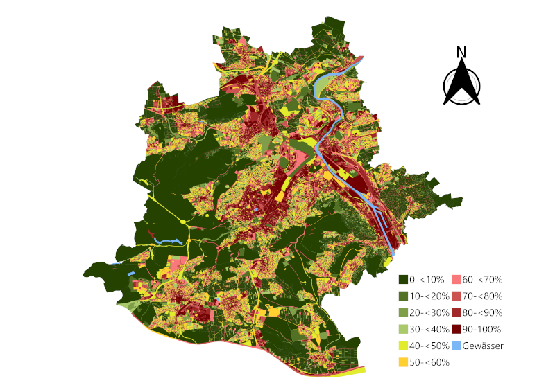

Asphaltierte Straßen, Parkplätze, Gebäude und gepflasterte Höfe: In unseren Städten ist ein großer Teil des Bodens versiegelt. Das hat Folgen. Regenwasser kann nicht mehr versickern und fließt in die Kanalisation ab, was bei Starkregen zu Überschwemmungen führen kann. Versiegelte Flächen heizen sich im Sommer stark auf, Pflanzen und Tiere verlieren ihren Lebensraum, und wertvoller Boden geht verloren.
Viele Städte und Gemeinden möchten deshalb Flächen gezielt wieder entsiegeln. Dafür müssen sie aber zunächst wissen, wo und wie stark der Boden versiegelt ist. Diese Flächen von Hand zu erfassen, kostet jedoch viel Zeit und Personal.
Versiegelte Flächen aus der Luft erkennen
In dieser Arbeit haben wir untersucht, ob sich versiegelte Flächen automatisch in Luftbildern erkennen lassen und welche Methoden sich dafür am besten eignen. Grundlage waren sehr detaillierte Luftbilder der Stadt Stuttgart mit einer Auflösung von 8 cm. Die Daten wurden uns durch das Stadtmessungsamt der Stadt Stuttgart für dieses Projekt zur Verfügung gestellt.
Für das Training eines KI-Modells zur Erkennung von versiegelten Flächen werden entsprechend annotierte Daten benötigt. Da es für die vorhandenen Daten keine passenden Datensätze gibt, mussten wir selbst in zahlreichen Bildern von Hand markieren, welche Flächen versiegelt sind und welche nicht. Mit diesen Beispielen haben wir anschließend verschiedene Verfahren getestet und miteinander verglichen: eine einfache Methode, die allein anhand der Farbwerte entscheidet, ob eine Fläche versiegelt ist, ein bereits bestehendes KI-System sowie ein eigens entwickeltes KI-Modell. Letzteres haben wir Schritt für Schritt verbessert, unter anderem indem wir ihm mehr und gezielter ausgewählte Trainingsbeispiele gegeben haben.
Was wir herausgefunden haben
Versiegelte Flächen lassen sich in Luftbildern zuverlässig erkennen, allerdings nicht mit jeder Methode gleich gut. Die einfache farbbasierte Methode lag nur in etwa sieben von zehn Fällen richtig. Die KI-Verfahren schnitten deutlich besser ab: Unser eigenes Modell erkannte versiegelte Flächen in über 90 Prozent der Fälle korrekt; das etablierte System konnte leider nicht verlässlich auf den vorhandenen Datensatz ausgewertet werden.

Es gibt aber auch Grenzen. Schon die Frage, was genau als „versiegelt“ gilt, ist nicht immer eindeutig, etwa bei Rasengittersteinen oder Schotterflächen. Zudem hängt die Qualität der Ergebnisse stark von den von Hand erstellten Beispielen ab. Und da nur Luftbilder verwendet wurden, bleibt unsichtbar, was etwa unter Baumkronen verborgen liegt. Ein weiteres, wenn auch kleineres Problem, stellen Fehlklassifizierungen statt, die mit einer höheren Anzahl an Trainingsbildern korrigiert werden können.
Warum das wichtig ist
Die Ergebnisse zeigen, dass künstliche Intelligenz Städten und Gemeinden helfen kann, sich schnell einen Überblick über versiegelte Flächen zu verschaffen. Das könnte die Planung von Entsiegelungsmaßnahmen deutlich erleichtern und die Entwicklung städtischer Flächen besser nachvollziehbar machen.
Die generierte Versiegelungskarte wurde der Stadt Stuttgart übergeben und fliesst dort nun in unterschiedliche Anwendungen ein.
{kind=link}

Dieses Projekt basiert auf der Masterarbeit von Danny Kolleth. Wir danken dem Stadtmessungsamt und dem Amt für Umweltschutz der Landeshauptstadt Stuttgart für die gute Zusammenarbeit!